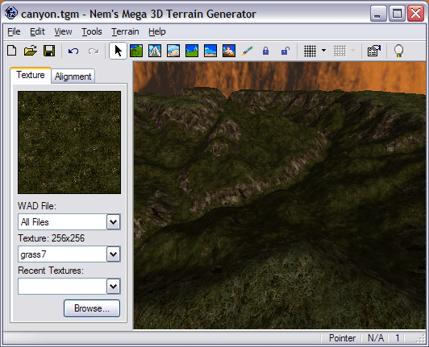
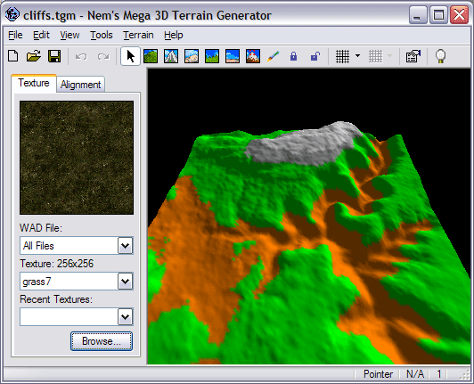
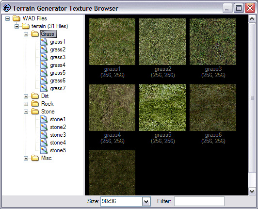

Nem's Mega 3D Terrain Generator is a relatively new terrain generator that takes a step in a completely different direction. Unlike traditional generators where the user must depend solely on the generators generation abilities, this generator gives its users complete 3D control over what their terrain looks like. Users start off with a flat piece of landscape, then add to it with one, or a combination of many powerful generation options. They then have several tools at their disposal to literally grab the terrain and pull it as they want it. The terrain can be saved as a .tgm file for latter use and exported to a .map file for use in any map editing programs for Quake engine based games such as Half-Life. Additionally terrain can be exported as a .t3d for use in UnrealEd or a .rmf or .vmf file for use in Hammer or any number of other supported formats.
Screenshots:


- Full 3D control over the appearance of your terrain.
- Nine tools to help you shape your terrain.
- Fractal terrain generation via eleven unique configurable algorithms.
- Heightmap terrain generation.
- Multi level Undo, Redo and Revert.
- Four render modes: Textured, Solid, Wireframe, and Points.
- Several different styles of lightmaps.
- Lots of additional display options.
- Save your terrain as a .tgm file for latter editing.
- Exports to .vmf, .map, .rmf, .t3d, .dxf, .obj, .smf, .txt, .bmp and .jpg file formats.
- Ability to export hint brushes along with your terrain for polygon reduction in Quake engine based games.
- Texture browser.
- Simple vertex locking.
- Recent .tgm file menu.
- Quick and easy setup.
- 100% Free.
Could you elaborate on that?
thank you so much for a wonderul yet powerfull tool
sorry, just working. had a problem with my connection...
A wonderful tool! Nice work!
I was wondering Nem % since TM can export to a map file would it be possible to convert it to a tgm file and bring it back into TM?
That would be very helpful as sometimes it's nice to adjust the terrain around things you have built rather than just around the terrain generated.
Since map files are jest a type of txt format and things built in a map editor are the same type of polyhedron-brush output as the terrain I would think that it would be a simple reversal of the converter you have in TG now.
Maybe that's over simplifying it, I hope not.
I understand it would not convert entities which could be eliminated prior to conversion or left out of the map file when exported out of a game editor by the creator to get around that problem.
Anyway, it's just a suggestion but I sure hope you would add that feature.
Thank you and take care,
cdunde
The problem is a fairly complex one so I dont think I'll be writing a .map importer, just to much work.
In reply to Xenocide in GCFScape v1.1.0 Beta thread who asked about the size of terrain you can use
I have been messing arround with TG since a few days now and found the max you can go without other buildings is 60*60 that is on my P4 2 Gh. that's without any kind of optimisation and it kills your r_speeds and FPS in Halflife.
where can i get a map converter that will do bsp to rmf.. anyone know?
Since upgrading to the latest version, the Flatten tool takes ages to drag the selection up to the required height. In addition, the pop-up description when you hover the mouse pointer over a tool icon flickers rapidly so you cannot see what it says.
In the old version, the Flatten tool worked virtually instantaneously.
Is there an adjustment?
- From the Tools menu select Options.
- Go to the Tools tab.
- Go to the Flatten tab.
- Unckeck Smart Code.
Sorry for the double post: I did not realise that the forums were interlinked.
Flatten now works as before. Thanks very much for that.
Any ideas about the flickering icon description - I have recently upgraded to WindowsXP SP2, and I know that this was not a good thing as far as some other programs are concerned.
Flickering icons seems to be related to which video card drivers you have installed. I know my Matrox card doesn't cause flickering icons but my ATI card does.
I think it could also have somthing to do with drivers. I know that sime applications used to flicker, but they no longer do for some reason.
Anyways, Terrain Generator does not support Source materials. I will probably add support for .vtf files latter but no more. To find out how to view Source materials in the current Terrain Generator see http://www.chatbear.com/board.plm?a=viewthread&t=424,1102888916,7007&id=752365&b=4989&v=flatold&s=0]this thread (scroll down to my big post).
In reality Terrain Generator needs a rewrite because it just wasn't designed to handle the Source engine. The Source engine was but a dream when Terrain Generator was programmed.
First of all, this is an extremely nice program, I love it. Before I tried out Source modding, I did quite a lot of stuff for Battlefield 1942.
I was playing around with your program, and noticed that the terrain generator has a heightmap option. Being a BF42 modder, I wanted to see if this worked - If so, then it would be pretty easy to port maps I did over to Source.
However, the heightmap option doesn't seem to work for me, even with a heightmap generated from the map in Terrain Generator itself. ;_; Is there something special I need to do or is it just broken for now?
1) Start new 48x48 map, triangles are at size 160.
2) Edit -> Push Revert
3) Make one or two changes to the map likeraising up one square (Purely for debugging!)
4) File -> Export -> Heightmap (Saved as a bmp)
5) Ctrl-Z back to the original.
6) Terrain -> Generate
7) Get rid of any checked off things excluding heightmap in the heightmap tab
8) Select the bitmap
9) Press generate
And then nothing. ;_;
the terrain generator is great.
I have a terrain in the .dxf format and i want to convert it into the .vmf(valve map format).I couldnt find any documentation on the .vmf format.I have some help on the dxf format.Can you pls help me with the conversion of the .dxf to .vmf.
Thanks.
I used the generator to make dune terrain for my 3D skybox.. my map takes advantage of fog (not enough do). The fog in my skybox seems to clash with the terrain anywhere the terrain is flat.. kinda looks like when you have two objects with-in each other.. ie see this screenshot taken from the compile:
http://i59.photobucket.com/albums/g283/goodfelladeal/badscreenshot.jpg
{kind=link}
All advice I've gotten is to scrap that terrain and rebuild from scratch.. Is this somethin that is caused by how the terrain is generated and is it something I should be able to fix in the generator?
Thank you,
Deal
Great tool btw.. makes it a lot easier to do.
( you have made a great app to bad that Im to newbie to estimate it :D )
like you are working with integers for height and not floating point values :s
left side is my original height map, right side is the heightmap being exported by Terrain Generator

if i use the smooth feature in generate i get it flatter and flatter but not smooth
The terrain generator is awsome! but after exporting it so I can view it in hammer, and add like 2 small buildings I get a stupid error when I compile.
This is the error:
ERROR:MAX_MAP_CLIPNODES
Is it possible that the terrain I created with TG has too many clipnodes? If so how can I fix this?
I know this a hammer/compiling error, but when I compile maps without TG it seems fine.
This is my log:
Zoner's Half-Life Compilation Tools -- Custom Build
Based on code modifications by Sean 'Zoner' Cavanaugh
Based on Valve's version, modified with permission.
Submit detailed bug reports to (amckern@yahoo.com)
----- BEGIN hlcsg -----
Command line: F:\PROGRA~1\VALVEH~1\tools\COMPIL~1\hlcsg.exe "f:\program files\valve hammer editor\maps\truthterrain_beta1"-cliptype smallest -noclipeconomy
Entering f:\program files\valve hammer editor\maps\truthterrain_beta1.map
Current hlcsg Settings
Name | Setting | Default
---------------------|-----------|-------------------------
threads [ 1 ] [ Varies ]
verbose [ off ] [ off ]
log [ on ] [ on ]
developer [ 0 ] [ 0 ]
chart [ off ] [ off ]
estimate [ off ] [ off ]
max texture memory [ 4194304 ] [ 4194304 ]
max lighting memory [ 6291456 ] [ 6291456 ]
priority [ Normal ] [ Normal ]
noclip [ off ] [ off ]
null texture stripping[ on ] [ on ]
clipnode economy mode [ off ] [ on ]
clip hull type [ smallest ] [ legacy ]
onlyents [ off ] [ off ]
wadtextures [ on ] [ on ]
skyclip [ on ] [ on ]
hullfile [ None ] [ None ]
nullfile [ None ] [ None ]
min surface area [ 0.500 ] [ 0.500 ]
brush union threshold [ 0.000 ] [ 0.000 ]
Using mapfile wad configuration
Wadinclude list :
[zhlt.wad]
CreateBrush:
(56.99 seconds)
SetModelCenters:
(0.00 seconds)
CSGBrush:
(65.16 seconds)
Using Wadfile: \sierra\half-life\valve\halflife.wad
- Contains 4 used textures, 17.39 percent of map (3116 textures in wad)
Using Wadfile: \program files\valve\steam\steamapps\fuzzy_maiden@yahoo.com\counter-strike\cstrike\de_copan.wad
- Contains 2 used textures, 8.70 percent of map (39 textures in wad)
Using Wadfile: \program files\valve\steam\steamapps\fuzzy_maiden@yahoo.com\counter-strike\cstrike\de_raoni.wad
- Warning: Larger than expected texture (348972 bytes): 'GRAVELGRASS01'
- Warning: Larger than expected texture (348972 bytes): 'GRAVELGRASS02'
- Warning: Larger than expected texture (348972 bytes): 'GRAVELGRASS03'
- Warning: Larger than expected texture (348972 bytes): 'GRAVELGRASS04'
- Warning: Larger than expected texture (348972 bytes): 'TRACKS01'
- Warning: Larger than expected texture (348972 bytes): 'TRACKS02'
- Warning: Larger than expected texture (348972 bytes): '{PALMS'
- Warning: Larger than expected texture (348972 bytes): '{PALMS3'
- Warning: Larger than expected texture (348972 bytes): '{PALMS2'
- Contains 0 used textures, 0.00 percent of map (55 textures in wad)
Using Wadfile: \program files\valve\steam\steamapps\fuzzy_maiden@yahoo.com\counter-strike\cstrike\czde_truth.wad
- Warning: Larger than expected texture (348972 bytes): '{BAM_TREES03'
- Warning: Larger than expected texture (272812 bytes): '{TK_PLANTLG'
- Contains 17 used textures, 73.91 percent of map (72 textures in wad)
Using Wadfile: \program files\valve\steam\steamapps\fuzzy_maiden@yahoo.com\counter-strike\cstrike\de_maya_beta4.wad
- Contains 0 used textures, 0.00 percent of map (35 textures in wad)
Texture usage is at 1.03 mb (of 4.00 mb MAX)
123.27 seconds elapsed [2m 3s]
----- END hlcsg -----
hlbsp v3.4 Final (Feb 25 2006)
Zoner's Half-Life Compilation Tools -- Custom Build
Based on code modifications by Sean 'Zoner' Cavanaugh
Based on Valve's version, modified with permission.
Submit detailed bug reports to (amckern@yahoo.com)
----- BEGIN hlbsp -----
Command line: F:\PROGRA~1\VALVEH~1\tools\COMPIL~1\hlbsp.exe "f:\program files\valve hammer editor\maps\truthterrain_beta1"-maxnodesize 8192
Current hlbsp Settings
Name | Setting | Default
-------------------|-----------|-------------------------
threads [ 1 ] [ Varies ]
verbose [ off ] [ off ]
log [ on ] [ on ]
developer [ 0 ] [ 0 ]
chart [ off ] [ off ]
estimate [ off ] [ off ]
max texture memory [ 4194304 ] [ 4194304 ]
priority [ Normal ] [ Normal ]
noclip [ off ] [ off ]
nofill [ off ] [ off ]
noopt [ off ] [ off ]
null tex. stripping [ on ] [ on ]
notjunc [ off ] [ off ]
subdivide size [ 240 ] [ 240 ] (Min 64) (Max 512)
max node size [ 8192 ] [ 1024 ] (Min 64) (Max 8192)
SolidBSP [hull 0] 500...1000...1500...2000...2500...3000...3500...4000...4500...5000...5500...6000...6500...6586 (11.74 seconds)
Warning: === LEAK in hull 0 ===
Entity light @ (-2274,-1918, 186)
Error:
A LEAK is a hole in the map, where the inside of it is exposed to the
(unwanted) outside region. The entity listed in the error is just a helpful
indication of where the beginning of the leak pointfile starts, so the
beginning of the line can be quickly found and traced to until reaching the
outside. Unless this entity is accidentally on the outside of the map, it
probably should not be deleted. Some complex rotating objects entities need
their origins outside the map. To deal with these, just enclose the origin
brush with a solid world brush
Leak pointfile generated
SolidBSP [hull 1] 500...1000...1500...2000...2500...3000...3500...4000...4500...5000...5500...6000...6500...7000...7500...8000...8500...9000...9500...10000...10500...11000...11500...12000...12500...12912 (269.54 seconds)
SolidBSP [hull 2] 500...1000...1500...2000...2500...3000...3500...4000...4500...5000...5500...6000...6500...7000...7500...8000...8500...9000...9500...10000...10500...11000...11500...12000...12500...12722 (300.91 seconds)
SolidBSP [hull 3] 500...1000...1500...2000...2500...3000...3500...4000...4500...5000...5500...6000...6500...7000...7500...8000...8500...9000...9500...10000...10500...11000...11500...12000...12500...13000...13500...13659 (243.76 seconds)
Error: Exceeded MAX_MAP_CLIPNODES
Description: The map has a problem which must be fixed
Howto Fix: Check the file http://www.zhlt.info/common-mapping-problems.html for a detailed explanation of this problem
----- END hlbsp -----
hlvis v3.4 Final (Feb 25 2006)
Zoner's Half-Life Compilation Tools -- Custom Build
Based on code modifications by Sean 'Zoner' Cavanaugh
Based on Valve's version, modified with permission.
Submit detailed bug reports to (amckern@yahoo.com)
----- BEGIN hlvis -----
Command line: F:\PROGRA~1\VALVEH~1\tools\COMPIL~1\hlvis.exe "f:\program files\valve hammer editor\maps\truthterrain_beta1"
>> There was a problem compiling the map.
>> Check the file f:\program files\valve hammer editor\maps\truthterrain_beta1.log for the cause.
----- END hlvis -----
hlrad v3.4 Final (Feb 25 2006)
Zoner's Half-Life Compilation Tools -- Custom Build
Based on code modifications by Sean 'Zoner' Cavanaugh
Based on Valve's version, modified with permission.
Submit detailed bug reports to (amckern@yahoo.com)
----- BEGIN hlrad -----
Command line: F:\PROGRA~1\VALVEH~1\tools\COMPIL~1\hlrad.exe "f:\program files\valve hammer editor\maps\truthterrain_beta1"
>> There was a problem compiling the map.
>> Check the file f:\program files\valve hammer editor\maps\truthterrain_beta1.log for the cause.
----- END hlrad -----
as you can see above, I have tried all the little tricks and I even added clipbrushes in areas where players shouldnt go, I was told this should work... still no luck,
Please help a little chick out :(
-fuzzy-
 , do you know a way I can fix this?
, do you know a way I can fix this?Is there a simple way to do this so it fits my work precisely or is it simply shots in the dark?
Right now, there is no way to import your map as a reference. Generally I start with the terrain then add other geometry.
TG was originally built for TG1. While it can export HL2 terrain it doesn't really support the HL2 material system. See this thread for more info.
Anyway, I can't access the texture palettes. When I try to select TOOLS/TEXTURES/etc... the menu is light grey and cannot be selected. Is this because I have no textures? Where can I get some? How can I convert JPG to texture maps? What do I need to do to get past this barrier?
At present, I just want to load up a texture to see that everything works.
Cheers,
JM.
Anyway, I would kinda like the ability to tunnel into the landscape to make some caves and stuff :P. (Other programs don't seem to export to .vmf so...)
Could you add Capture function please?
thank you.
First, Make new project
then
Tools -> Option -> Packages -> Add package or Add Folder
If you can please take a look here:


The first image was the opened file in hammer after it was generated by terrain editor, and the other two are .bsp files.
The first one is textured and the other is wireframed.
Im a experienced noob at hammer and please help if you can.
First, is there a good way to optimize a terrain mesh? When I export it I get a very static mesh, other terrain generators like L3DT seem to be able to optimize the output so that curved sections receive more geometry and flat sections receive less.
I'm using this in a flash environment, so optimization is quite important to me.
Second, I have been able to export and OBJ file and import it into other tools, but I haven't been able to get the texture map out as well, so far just the mesh. I probably missed something simple, but I've been through most of the site with no luck on figuring it out.
The first image was the opened file in hammer after it was generated by terrain editor, and the other two are .bsp files.
The first one is textured and the other is wireframed.
Im a experienced noob at hammer and please help if you can.
I don't know for sure, because personally I've never used this program, but this is my guess of an answer to your question.
In the Half-Life 1 / Gold Source engine the best way to get terrain that looks semi decent is to make it with a grid of triangles / wedges (Triangles showing up on top view). To refrain from accidental concave brushes, every triangle is it's own brush. If you were to do this manually, without a generator, then you could for example; simply make the grid of all 16unit high wedges/triangles, select them all, and use the vertex tool to move all the meeting vertexes to the heights you want (Takes time :P).
However, when you use this generator to do it, it looks like the triangles have a set coordinate for one of the axis (IE they will all go down to the bottom / same depth). This will give the effect in wireframe view that there are "Boxes" going down to the bottom of the sky (Or however far they go down). If you look closely they're actually triangles not squares ;).
The best thing to do, if you haven't already, is to select all your terrain and click shift+a, then CAREFULLY deselect all the faces people will see, then assign the texture "NULL" to the selected faces (The ones that arent visible). Null texture is in ZHLT.wad which you should have :P if not look up zoners half life tools.
heh I just realized your post was a year ago, I doubt you'll get the reply!.. Hope this was the right answer though (PS no way to get rid of it either then manually change height of bottom 3 vertexes).